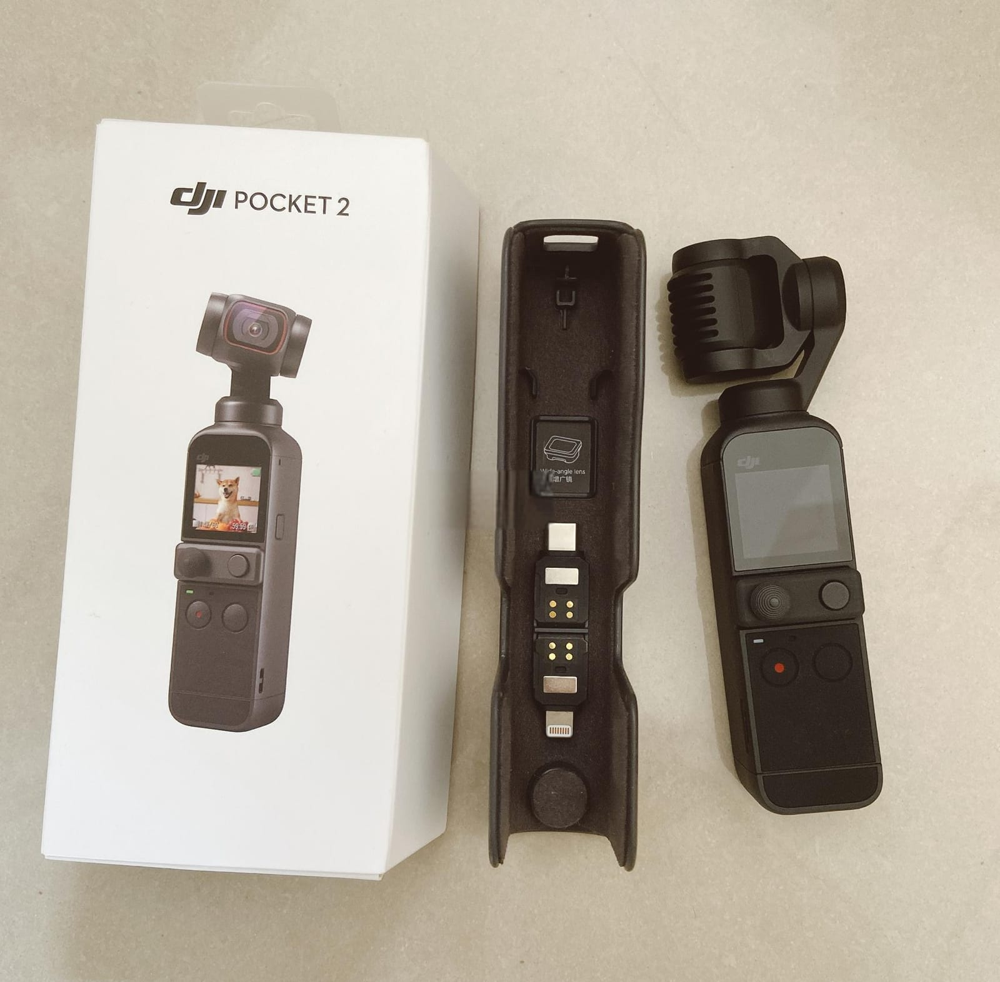

大疆 Osmo Pocket

三轴云台塞进口袋，随手拍也稳如滑轨。
客观评测
大疆 Osmo Pocket 将三轴机械云台与 1/2.3 英寸约 1200 万像素相机集成在约 116 克的机身内，可录制 4K/30p 视频并支持自动对焦。机械稳像效果优于电子防抖，画面无大幅裁切、无明显果冻效应。机身内置约 1 英寸触摸屏，也可通过转接手机扩展取景与参数设置。内置双立体声麦克风收音尚可，续航约 140 分钟视频录制，microSD 卡存储，随身携带几乎无负担。
主观点评
Osmo Pocket 解决了边走边拍会不会抖的痛点：三轴云台让随手记录也像上了稳定器，画面平顺得不真实。体积小到可以挂在钥匙扣旁，随时掏出拍一段。小屏幕操作空间有限，手势与配件几乎是必需品，弱光画质也不占优势。但它把云台相机平民化，让 Vlog 与家庭记录的门槛大幅降低，是很多人视频创作的第一台设备。
优点与不足
- 三轴机械云台稳像效果远超电子防抖
- 116 克极致便携，随身携带无负担
- 一键全景、延时等智能玩法丰富
- 小底传感器暗光表现一般
- 屏幕过小，操作依赖手机扩展
参数规格
| 类型 | 手持三轴云台相机 |
|---|---|
| 传感器 | 1/2.3 英寸约 1200 万像素 CMOS |
| 像素 | 约 1200 万（照片） |
| 镜头 | 等效约 26mm f/2.0 |
| 视频 | 4K/30p，1080/60p |
| 防抖 | 三轴机械云台稳像 |
| 对焦 | 自动对焦，约 0.6 米至无穷远（微距需附加镜） |
| 取景 | 约 1 英寸触摸屏，可扩展手机取景 |
| 音频 | 双立体声麦克风 |
| 存储 | microSD 卡 |
| 电池 | 内置锂电池，约可录制 140 分钟视频 |
| 重量 | 约 116 克 |